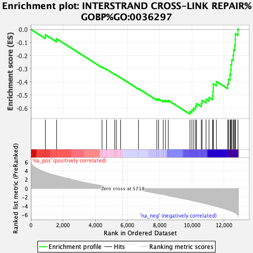
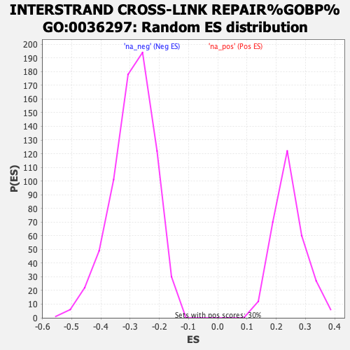

| | | Dataset | ranked_genes_2 |
| Phenotype | NoPhenotypeAvailable |
| Upregulated in class | na_neg |
| GeneSet | INTERSTRAND CROSS-LINK REPAIR%GOBP%GO:0036297 |
| Enrichment Score (ES) | -0.6464166 |
| Normalized Enrichment Score (NES) | -2.228313 |
| Nominal p-value | 0.0 |
| FDR q-value | 2.041085E-4 |
| FWER p-Value | 0.003 |
Table: GSEA Results Summary

Fig 1: Enrichment plot: INTERSTRAND CROSS-LINK REPAIR%GOBP%GO:0036297
Profile of the Running ES Score & Positions of GeneSet Members on the Rank Ordered List
| SYMBOL | RANK IN GENE LIST | RANK METRIC SCORE | RUNNING ES | CORE ENRICHMENT | | 1 | RNF8 | 902 | 3.689 | -0.0407 | No |
| 2 | FANCF | 1599 | 2.911 | -0.0716 | No |
| 3 | HMCES | 4425 | 0.616 | -0.2862 | No |
| 4 | DCLRE1C | 4704 | 0.443 | -0.3043 | No |
| 5 | FAAP20 | 5212 | 0.185 | -0.3422 | No |
| 6 | NUCKS1 | 5313 | 0.143 | -0.3488 | No |
| 7 | ERCC6L2 | 5580 | 0.044 | -0.3692 | No |
| 8 | NEIL3 | 6686 | -0.414 | -0.4517 | No |
| 9 | SPRTN | 7828 | -1.106 | -0.5316 | No |
| 10 | CENPX | 7939 | -1.185 | -0.5307 | No |
| 11 | DCLRE1B | 8225 | -1.365 | -0.5420 | No |
| 12 | FANCC | 8367 | -1.466 | -0.5412 | No |
| 13 | CENPS | 8536 | -1.615 | -0.5414 | No |
| 14 | ERCC4 | 9888 | -2.628 | -0.6255 | Yes |
| 15 | FAAP24 | 10007 | -2.733 | -0.6129 | Yes |
| 16 | EXO5 | 10123 | -2.828 | -0.5993 | Yes |
| 17 | HROB | 10238 | -2.919 | -0.5850 | Yes |
| 18 | MCM9 | 10296 | -2.955 | -0.5659 | Yes |
| 19 | FANCM | 10592 | -3.207 | -0.5633 | Yes |
| 20 | FAAP100 | 10640 | -3.243 | -0.5411 | Yes |
| 21 | RAD51AP1 | 10884 | -3.481 | -0.5323 | Yes |
| 22 | VCP | 11071 | -3.644 | -0.5177 | Yes |
| 23 | POLN | 11297 | -3.848 | -0.5046 | Yes |
| 24 | FANCB | 11314 | -3.864 | -0.4750 | Yes |
| 25 | XPA | 11336 | -3.885 | -0.4457 | Yes |
| 26 | FANCE | 11338 | -3.887 | -0.4149 | Yes |
| 27 | ATR | 11533 | -4.061 | -0.3976 | Yes |
| 28 | FANCA | 12231 | -4.811 | -0.4135 | Yes |
| 29 | RNF168 | 12280 | -4.883 | -0.3783 | Yes |
| 30 | FANCL | 12379 | -5.026 | -0.3460 | Yes |
| 31 | MCM8 | 12421 | -5.086 | -0.3087 | Yes |
| 32 | FAN1 | 12439 | -5.102 | -0.2694 | Yes |
| 33 | RAD51 | 12482 | -5.167 | -0.2315 | Yes |
| 34 | FANCG | 12572 | -5.292 | -0.1963 | Yes |
| 35 | FANCI | 12604 | -5.353 | -0.1561 | Yes |
| 36 | RFWD3 | 12670 | -5.467 | -0.1176 | Yes |
| 37 | XRCC3 | 12701 | -5.505 | -0.0761 | Yes |
| 38 | DCLRE1A | 12708 | -5.520 | -0.0326 | Yes |
| 39 | FANCD2 | 12870 | -6.044 | 0.0030 | Yes |
Table: GSEA details [plain text format]

Fig 2: INTERSTRAND CROSS-LINK REPAIR%GOBP%GO:0036297: Random ES distribution
Gene set null distribution of ES for INTERSTRAND CROSS-LINK REPAIR%GOBP%GO:0036297